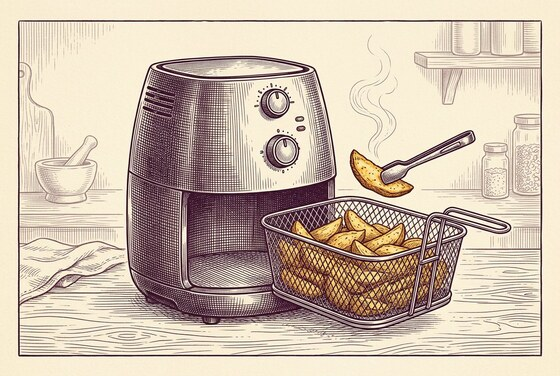
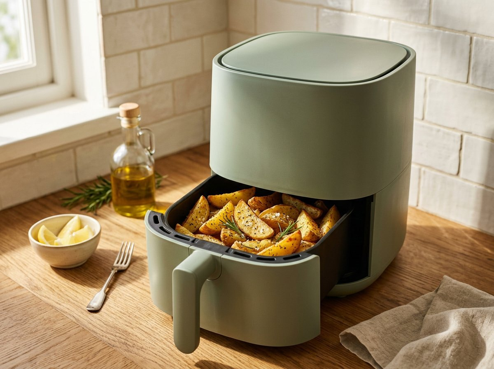
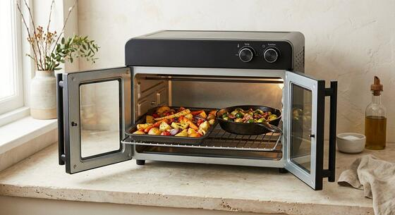
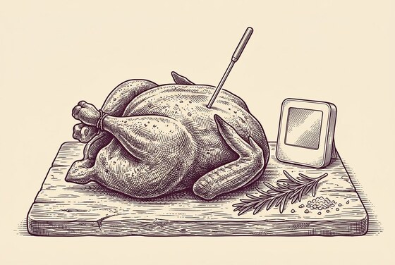

FORMAT ILLUSTRATIONDual-basket air fryer
Chefman Dual Basket
Two separate baskets for the main and the side.
Explore product →Basket or oven? Start with what you cook, how much fits, and the space you actually have.

FIG. 01 / THE BASKET AIR FRYERFive kitchen picks, with the details that matter before you buy.

FORMAT ILLUSTRATIONTwo separate baskets for the main and the side.
Explore product →
FORMAT ILLUSTRATIONTray space for cooks who prefer an oven layout.
Explore product →One roomy basket instead of a divided drawer.
Explore product →
FORMAT ILLUSTRATIONKitchen imagery is illustrative, not product photography.